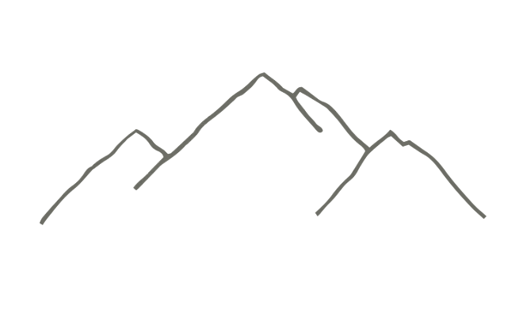
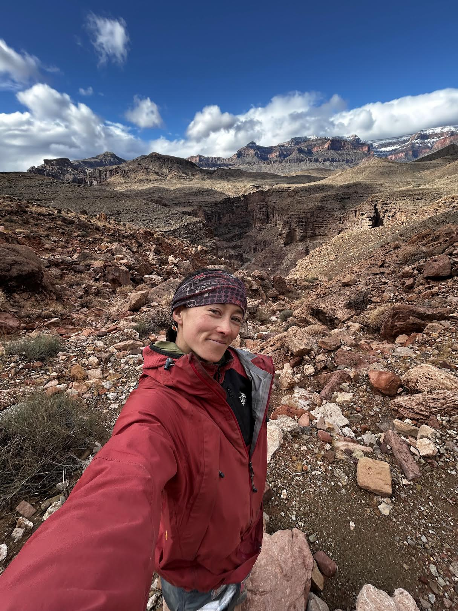
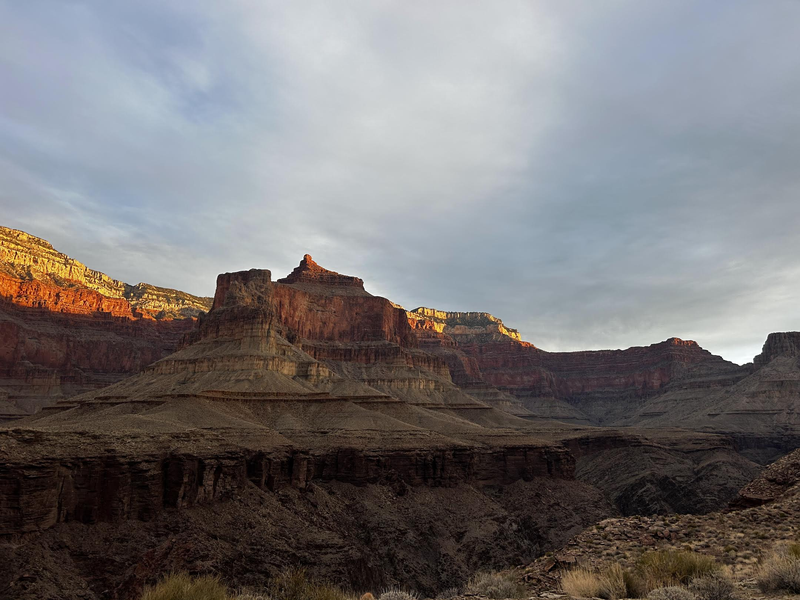

Come with us on a long walk. At The Way We Walk, we offer excursions into the mountains and forests where we provide the opportunity to learn the skills involved with going on long multi-day walks. This is a backpacking instruction and guide service. There is opportunity to learn, there is also the opportunity to just be taken on a trip; the way you would like to walk is for you to choose. We do not promise a perfect experience, but instead a whole one. An experience where we work in community, learn new things, feel the Earth next to our bodies as we fall asleep, feel filled with life, feel irritated and cranky, sit with discomfort, sit with the birds and the rocks, be with, be alone, be...
Come move into a reality where the human is de-centered and appropriately situated within our own being. A reality where we engage more honestly with the world around us. Let us humbly ask for help together. Here, you are welcome to be, to breathe, and to walk.

Avalon Qian
Avalon began learning navigation the moment she began taking SF public transit on her own in the Bay Area. In this way she began learning the subtle ways of situating herself in space, using a map, orienting herself to her surroundings and finding her way home. Her knowledge in this realm grew as she began working with a map and compass in the mountains. In her opinion, being able to navigate through any landscape is one of the most empowering and freeing skills. It is with this passion that she hopes to help you walk along our Earth.
Avalon has been working in the outdoor industry for the past 13 years. She has successfully led multi-day backpacking, climbing and kayaking trips that range from short weekends to full month-longs. She has worked at various institutions, the most notable and influential being the National Outdoor Leadership School (based out of Lander, WY) and GirlVentures (based out of Oakland, CA). Avalon is incredibly grateful to have learned and grown as an outdoor educator in spaces that taught her how to love community and dial in her skillset.
Avalon grew up in the San Francisco and she loves the body of the Bay, the Golden Gate entry way and the water ways that have flown in and out of her reality while growing up. With lots of active energy, she loves playing soccer, dancing, surfing, rock climbing, painting, singing, jumping in the ocean, snuggling with her hound, playing games of any kind, coaching, among other things. Taking long walks in the mountains reminds her of the beauty of moving slowly, of paying attention, taking in smells and sensations, smiling at the rocks, singing to the bees.
In 2025, Avalon completed a 30 day solo backpacking adventure of part of the Grand Canyon, land sacred to many people on Turtle Island: The Western Shoshone, Southern Paiute, Hualapai, Hopi, Zuni, Diné, Pueblos, Havasupai.
The walls of the Canyon are etched into my heart as I am etched into the walls of the Canyon. My work is in full service to the Canyon, who has given me my life back to myself. I give myself entirely to the Canyon, whatever it is I am to do is in service to the energy, spirit, entity of that sacred place.

My ancestry does not originate on Turtle Island, aka the land colonized as the United States. My roots take me to Europe and China, with histories known and unknown in Ireland, Scotland and the Anhui province. I walk on these lands as a settler colonizer having grown up in unsceded Ohlone territory. My intention is to continue to learn how to decolonize my relationship to land and my work. I want to be in relation with the land, the histories and my work in a good way. I am far from perfect in this realm. For each area that we go to explore, the intention is to learn about what the first nations people of that land are doing today and how we can support them.
At the Way We Walk we believe in a Free Palestine, Land back to indigenous nations, Land Back to itself, the abolition of prisons, and Reparations. To be with land, to listen to the land, and to ask for help from the land means to stand in solidarity with those who have been severed from their connections to land and who are fighting today to return.